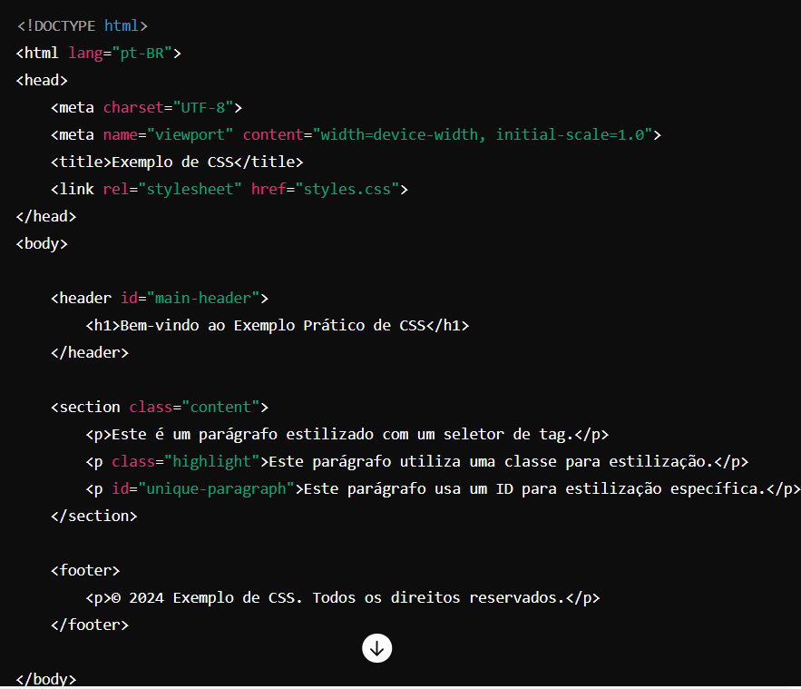

O que é CSS
CSS (Cascading Style Sheets) é uma linguagem de estilo usada para descrever a apresentação de um documento escrito em HTML ou XML. Ela controla a aparência e o layout das páginas web. Com CSS, você pode aplicar estilos a elementos HTML, como cores, fontes, espaçamento e layout, entre outros.
1-Seletores: Definem quais elementos HTML serão estilizados. Exemplos incluem seletores de tipo (p, h1), de classe (.classe), de ID (#id) e seletores de atributos.
2-Propriedades e Valores: Cada propriedade controla um aspecto específico do estilo (como color, font-size, margin), e cada propriedade é definida por um valor (como red, 16px, 10px).
3-Classes e IDs são seletores usados no CSS para aplicar estilos a elementos HTML específicos. Eles são fundamentais para o design e a estruturação de páginas web. As classes são usadas para aplicar um conjunto de estilos a vários elementos. Você define uma classe no CSS com um ponto (.) seguido pelo nome da classe. No HTML, você atribui essa classe a um elemento usando o atributo class.
4-O conceito de cascata se refere à forma como o navegador decide qual regra de estilo aplicar quando múltiplas regras se aplicam ao mesmo elemento. A cascata leva em consideração três fatores principais:
Origem do Estilo: Estilos podem vir de diferentes origens:
Estilos do autor (escritos pelo desenvolvedor da página).
Estilos do usuário (configurações personalizadas do usuário).
Estilos do navegador (estilos padrão do navegador).
Especificidade: Cada seletor tem um nível de especificidade que determina sua prioridade.
Ordem de Aparição: Quando dois seletores têm a mesma especificidade, o último seletor em ordem de aparição no CSS é aplicado.
4.1-Especificidade
A especificidade é calculada com base em um sistema de pontos atribuído aos diferentes tipos de seletores. A hierarquia de especificidade pode ser entendida da seguinte maneira:
IDs: 100 pontos
Classes, pseudo-classes e atributos: 10 pontos
Elementos e pseudo-elementos: 1 ponto
Estilos inline: 1000 pontos (aplicados diretamente no elemento HTML)
